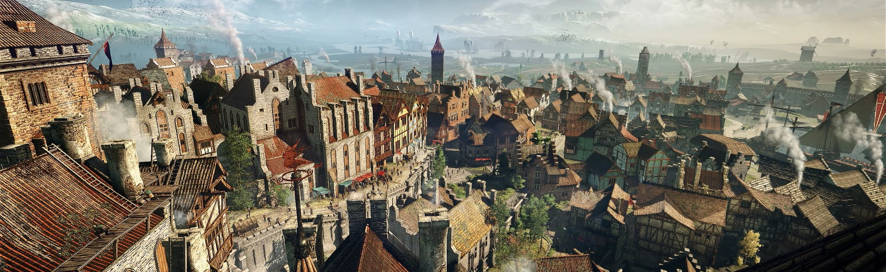
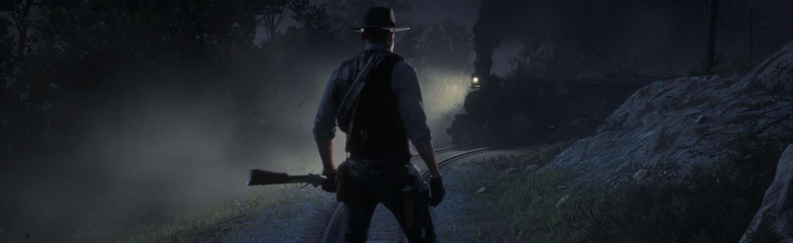
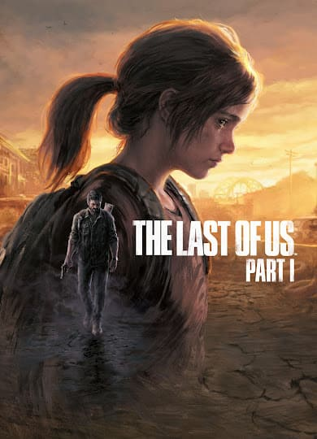
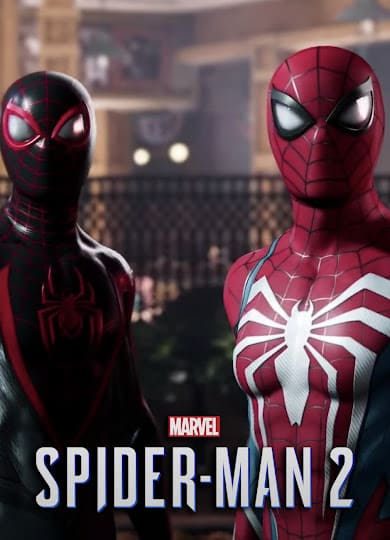
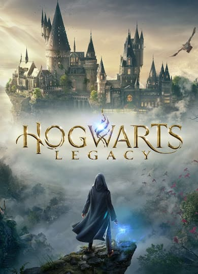
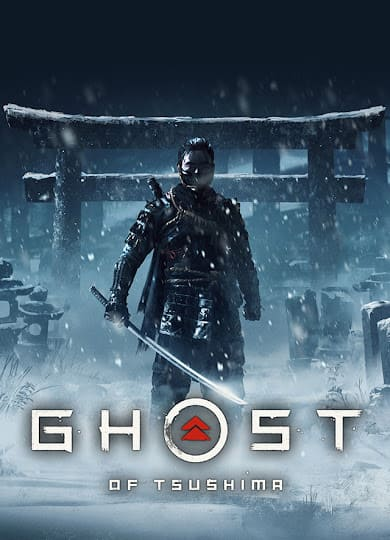
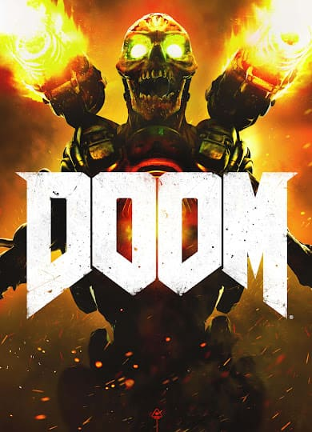

AMPLIO CATÁLOGO DE JUEGOS MODERNOS
Encuentra tu próxima aventura

SOUNDTRACKS
Las mejores bandas sonoras que acompañan tu historia

TRAILERS
Adelantos que despiertan la curiosidad
Juegos Populares
-
Esta premiada entrega de Naughty Dog nos lleva a un mundo postapocalíptico donde asumes el papel de Joel y Ellie. Su viaje a través de un Estados Unidos devastado es una lucha por la supervivencia en un mundo infectado. La narrativa intensa y emocional se centra en su relación y las difíciles decisiones que deben tomar.
-
 Bloodborne es un videojuego de acción y rol ambientado en la ciudad Yharnam, afectada por una enfermedad que transforma a sus habitantes en criaturas horripilantes. Como cazador, debes buscar respuestas y una cura mientras te sumerges en una trama oscura y compleja. Con una jugabilidad desafiante y una atmósfera única, el juego destaca por su narrativa y su estética gótica.
Bloodborne es un videojuego de acción y rol ambientado en la ciudad Yharnam, afectada por una enfermedad que transforma a sus habitantes en criaturas horripilantes. Como cazador, debes buscar respuestas y una cura mientras te sumerges en una trama oscura y compleja. Con una jugabilidad desafiante y una atmósfera única, el juego destaca por su narrativa y su estética gótica. -
 Premiado con el Game Of The Year Award en 2015, The Witcher 3 te introduce al mundo de fantasía de Geralt de Rivia, un cazador de monstruos que deberá buscar a Ciri, su pupila adoptiva. Explora un vasto y detallado mundo abierto lleno de misterios y peligros. La narrativa rica y ramificada te sumerge en una historia épica con personajes memorables y decisiones morales impactantes.
Premiado con el Game Of The Year Award en 2015, The Witcher 3 te introduce al mundo de fantasía de Geralt de Rivia, un cazador de monstruos que deberá buscar a Ciri, su pupila adoptiva. Explora un vasto y detallado mundo abierto lleno de misterios y peligros. La narrativa rica y ramificada te sumerge en una historia épica con personajes memorables y decisiones morales impactantes. -
 En Red Dead Redemption 2, la historia se centra en Arthur Morgan y la banda de forajidos de Van der Linde mientras enfrentan desafíos, persecuciones y conflictos internos en un Salvaje Oeste en transición. La trama explora temas de lealtad, moral y supervivencia en un mundo cambiante y presenta giros inesperados en una narrativa rica y profunda.
En Red Dead Redemption 2, la historia se centra en Arthur Morgan y la banda de forajidos de Van der Linde mientras enfrentan desafíos, persecuciones y conflictos internos en un Salvaje Oeste en transición. La trama explora temas de lealtad, moral y supervivencia en un mundo cambiante y presenta giros inesperados en una narrativa rica y profunda. -
 Esta última aventura de Nathan Drake comienza cuando su hermano Sam aparece y lo arrastra a la búsqueda del legendario tesoro pirata del capitán Henry Avery. El juego te lleva a exóticos lugares de todo el mundo, con una narrativa llena de giros, peligros y decisiones difíciles. La saga Uncharted es conocida por su mezcla de acción, exploración y personajes carismáticos.
Esta última aventura de Nathan Drake comienza cuando su hermano Sam aparece y lo arrastra a la búsqueda del legendario tesoro pirata del capitán Henry Avery. El juego te lleva a exóticos lugares de todo el mundo, con una narrativa llena de giros, peligros y decisiones difíciles. La saga Uncharted es conocida por su mezcla de acción, exploración y personajes carismáticos.
Nuevos Lanzamientos
-
 Mientras las fuerzas de Asgard se preparan para la batalla profetizada que llevaría al fin del mundo, Kratos y Atreus deben viajar a los Nueve Reinos para encontrar respuestas. En el camino, explorarán increíbles paisajes míticos y se enfrentarán a monstruos y dioses nórdicos.
Mientras las fuerzas de Asgard se preparan para la batalla profetizada que llevaría al fin del mundo, Kratos y Atreus deben viajar a los Nueve Reinos para encontrar respuestas. En el camino, explorarán increíbles paisajes míticos y se enfrentarán a monstruos y dioses nórdicos. -
 En Stray, te sumerges en la piel de un gato callejero perdido y separado de su familia, en una ciudad olvidada. Tu misión es desentrañar un antiguo misterio para encontrar el camino de regreso a casa en medio de una ciberciudad decadente. Explora los callejones iluminados por el neón y sus rincones turbios en esta aventura de un gato en tercera persona.
En Stray, te sumerges en la piel de un gato callejero perdido y separado de su familia, en una ciudad olvidada. Tu misión es desentrañar un antiguo misterio para encontrar el camino de regreso a casa en medio de una ciberciudad decadente. Explora los callejones iluminados por el neón y sus rincones turbios en esta aventura de un gato en tercera persona. -
 En esta nueva entrega interpretamos a Basim, un joven delincuente callejero cuyo viaje nos guía hacia la maestría entre los Asesinos. La narrativa nos transporta a la Bagdad del siglo IX, durante el califato Abasí, donde exploramos nuestro pasado y enfrentamos la amenaza de los integrantes de la Orden que ejercen control sobre la ciudad.
En esta nueva entrega interpretamos a Basim, un joven delincuente callejero cuyo viaje nos guía hacia la maestría entre los Asesinos. La narrativa nos transporta a la Bagdad del siglo IX, durante el califato Abasí, donde exploramos nuestro pasado y enfrentamos la amenaza de los integrantes de la Orden que ejercen control sobre la ciudad. -
En esta nueva entrega de Marvel's Spider-Man, Peter Parker y Miles Morales regresan para combatir las amenazas que Venom y Kraven están provocando en las calles de Nueva York.
-
Crea tu propio personaje quien será estudiante de la famosa escuela de Hogwarts y poseerá la clave de un antiguo enigma que representa una amenaza para el mundo mágico.
Clásicos Preservados
-
 En un mundo desolado y misterioso, te conviertes en un no muerto en busca de salvación en Dark Souls. Enfrentas desafíos épicos, desde combates intensos hasta la exploración de un entorno interconectado. La trama se revela sutilmente mientras descubres los secretos de un reino en ruinas.
En un mundo desolado y misterioso, te conviertes en un no muerto en busca de salvación en Dark Souls. Enfrentas desafíos épicos, desde combates intensos hasta la exploración de un entorno interconectado. La trama se revela sutilmente mientras descubres los secretos de un reino en ruinas. -
 Resident Evil 2 transcurre en el caos de Raccoon City, donde zombis y criaturas acechan las calles. Leon S. Kennedy y Claire Redfield deberán escapar de la ciudad infestada y descubrir los secretos del brote del virus T. El juego combina la supervivencia, el terror y los rompecabezas en una experiencia intensa y aterradora.
Resident Evil 2 transcurre en el caos de Raccoon City, donde zombis y criaturas acechan las calles. Leon S. Kennedy y Claire Redfield deberán escapar de la ciudad infestada y descubrir los secretos del brote del virus T. El juego combina la supervivencia, el terror y los rompecabezas en una experiencia intensa y aterradora. -
 Red Dead Redemption te lleva al salvaje oeste a principios del siglo XX, asumiendo el papel de John Marston, un forajido en busca de redimir su pasado. Explora un vasto mundo abierto, participa en emocionantes aventuras y enfrenta decisiones morales en una narrativa rica y desafiante.
Red Dead Redemption te lleva al salvaje oeste a principios del siglo XX, asumiendo el papel de John Marston, un forajido en busca de redimir su pasado. Explora un vasto mundo abierto, participa en emocionantes aventuras y enfrenta decisiones morales en una narrativa rica y desafiante. -
 Assassin's Creed II te lleva a la Italia del Renacimiento, donde interpretas a Ezio Auditore da Firenze, un joven noble convertido en asesino. A medida que persigues la venganza contra los templarios, te sumerges en una trama de conspiración y secretos, explorando ciudades históricas y luchando contra enemigos poderosos en una mezcla de acción y sigilo.
Assassin's Creed II te lleva a la Italia del Renacimiento, donde interpretas a Ezio Auditore da Firenze, un joven noble convertido en asesino. A medida que persigues la venganza contra los templarios, te sumerges en una trama de conspiración y secretos, explorando ciudades históricas y luchando contra enemigos poderosos en una mezcla de acción y sigilo. -
 En el contexto de la Guerra Fría, Metal Gear Solid 3: Snake Eater te coloca en el papel de Naked Snake, un agente de élite. Debes infiltrarte en un entorno hostil lleno de conspiraciones y enfrentarte a enemigos poderosos. La trama se desenvuelve en una jungla traicionera y te desafía a sobrevivir en un mundo donde cada movimiento puede ser tu último.
En el contexto de la Guerra Fría, Metal Gear Solid 3: Snake Eater te coloca en el papel de Naked Snake, un agente de élite. Debes infiltrarte en un entorno hostil lleno de conspiraciones y enfrentarte a enemigos poderosos. La trama se desenvuelve en una jungla traicionera y te desafía a sobrevivir en un mundo donde cada movimiento puede ser tu último.
Nominados al Game of the Year
-
 Horizon Zero Dawn te lleva a un futuro postapocalíptico donde las máquinas gigantes dominan la Tierra. Aloy, una cazadora en busca de respuestas, descubrirá los misterios detrás de esta civilización caída. El juego ofrece una mezcla de exploración, combate y una narrativa cautivadora en un mundo lleno de sorpresas tecnológicas y desafíos de supervivencia.
Horizon Zero Dawn te lleva a un futuro postapocalíptico donde las máquinas gigantes dominan la Tierra. Aloy, una cazadora en busca de respuestas, descubrirá los misterios detrás de esta civilización caída. El juego ofrece una mezcla de exploración, combate y una narrativa cautivadora en un mundo lleno de sorpresas tecnológicas y desafíos de supervivencia. -
Durante la invasión mongol en la isla de Tsushima en el siglo XIII, te conviertes en Jin Sakai, un samurái enfrentado a la difícil decisión entre mantener el código de los samurái o embarcarte en un camino más oscuro para proteger tu hogar de los invasores. Con elementos de combate, exploración y una inmersión en la cultura japonesa, el juego ofrece una experiencia visualmente impactante.
-
 Fallout 4 te sumerge en un mundo postapocalíptico después de una guerra nuclear. Interpretas a un superviviente en busca de su hijo y te enfrentas a un yermo peligroso lleno de mutantes, facciones en conflicto y decisiones morales. Con un sistema de creación, exploración y combate, debes navegar por este mundo desolado en busca de respuestas y supervivencia.
Fallout 4 te sumerge en un mundo postapocalíptico después de una guerra nuclear. Interpretas a un superviviente en busca de su hijo y te enfrentas a un yermo peligroso lleno de mutantes, facciones en conflicto y decisiones morales. Con un sistema de creación, exploración y combate, debes navegar por este mundo desolado en busca de respuestas y supervivencia. -
 En un mundo postapocalíptico, un repartidor llamado Sam Porter Bridges se embarca en una misión para reconectar ciudades aisladas y reconstruir la sociedad. Con la mecánica central de entrega de cargamentos y enfrentamientos con lo sobrenatural, el juego fusiona elementos de exploración y una narrativa profunda en un paisaje surrealista.
En un mundo postapocalíptico, un repartidor llamado Sam Porter Bridges se embarca en una misión para reconectar ciudades aisladas y reconstruir la sociedad. Con la mecánica central de entrega de cargamentos y enfrentamientos con lo sobrenatural, el juego fusiona elementos de exploración y una narrativa profunda en un paisaje surrealista. -
En un escenario infernal y plagado de demonios, el Doom Slayer se encuentra en una misión implacable para detener la invasión demoníaca en Marte y el Infierno. La historia se desarrolla mientras se desata el caos, luchando contra demonios y descubriendo secretos en la búsqueda por la supervivencia de la humanidad.